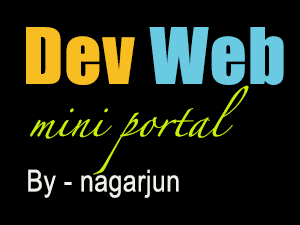

Messaging Specialist, Full Stack Developer, an independent contributor, design and develop of applications, R&D on new technologies related to the Java, J2EE and other languages and adoption of DevOps Tools. Adopting New Methodologies like scrum and Aglie during software Development. Complete Life Cycle Management of the Applications.
About Me
Work Experience
Technical Specialist - IG Group (June-2018 - Present)
Product development responsibilities:
- Served as a Subject Matter Expert (SME) for a business domain, which enabled the development of a comprehensive renovation plan for the business.
- Innovating on POCs for adopting new infrastructure/software for an application.
- Implementing containerization and Nomad in the application.
- Driving the team to achieve MVP
- Architecting the technical design for specific requirements or enhancements.
- Enhancing observability and traceability for applications
- Mentoring the team on best design/development practices. Adoption on TDD and Pair Programming approach of solving problems.
- Worked on POC's to set the baseline performance of Kafka depending on the needs of organization and setting the standards.
- Defining the architectural tasks for the complete renovation project. Discussion and defining the schema to adhere to Industry standards.
- Responsible for complete development of an applications from scratch till making it production ready. Responsible for considering all the NFR's. Which includes 12 factor apps principles. And other configuration of monitoring apps including appdynamics, Grafana, Bamboo (CI/CD Pipeline).
- Defining SLA, SLO, and SLI., Performing the chaos testing, Integration Testing (BDD) etc. Focusing on observability of the apps by achieving the NFRs for the same.
- Extensive work on Messaging Infrastructure and Development of applications using Java 8 and Spring Boot.
- Migration of the Fiorano MQ to Artemis MQ and Kafka for all the critial Dealing flows and non critical flows.
- R&D on Artemis MQ and Kafka and its use cases in the IG application. Providing the technical challenges to the Artems Support team and getting the issues of Open source Softwares fixed.
- Building Standalone applications for bridging Firoano MQ to Artemis MQ which in-turn helps all the down stream applications to migrate at frist and later to remove the existing flows.
- Development of UI components (Templates) includes Bootstrap, JavaScript, Jquery, Thymeleaf for building the messaging Infrastructure.
- Responsible for entire development, testing and deployment of the applications to AWS post migration.
- Developed Artemis and Kafka Libraries which in-turn extensively used for migration of all the flows in different micro services.
- Dockerizing the Artemis server, and dockerizing the application and configuring the same.
- Was part of the Architectural design of Migration and prepared Architectural design Document, Technical Specifications Document, UML Diagrams.
- Developed and configured the AVRO for Kafka support and AMQ broker.
- Vulnerabilities checks and code analyze using findbugs and fix bugs and Review of the Pull requests of the peers. Providing the Technical aid for migration of existing flows to new architecture.
Senior Software Engineer - SLK Software Services Pvt Ltd (Sept-2016 - May-2018)
Product development responsibilities:
- Configuration and development of the RESTful Web-Service Components.
- Development of the Batch component.
- Writing the bean classes, Service layers, Services calls in Web Services.
- Development of UI components (Templates) includes Bootstrap, JavaScript, Jquery, Angular and integration with the backend systems.
- Development of Admin tool for Projects related to Back-end (In case to address critical request like manual payout for elite customers, Lucky draw winners etc.)
- Implemented the different design patterns like, Spring MVC, Façade, Builder, Singleton.
- Prepared Architectural design Document, Technical Specifications Document, UML Diagrams.
- Developed a YAML documentation to share the channels for integration of the web services.
- Peer Reviews on the code.
- Vulnerabilities checks and code analyze using findbugs and fix bugs.
- Build Management-write ivy script for maintaining the centralized local repositories.
Senior Software Engineer - IGATE Global Solutions - Capgemini (Jan-2014 - Jly-2016)
Product development responsibilities:
- Writing Backing Beans Classes, Domain Classes, Service Classes, Navigation Rules.
- Designed JSFs as per the requirements.Designed the MVC structure from the scratch.
- R&D on VMware fusion on MAC OSX, VMware Workstation,Virtual Box on windows.
- Wrote configuration files – ApplicationContext xml , persistence xml, database properties files.
- Integrated JSF, Spring, Hibernate, Primefaces,Jersey Restfull webservices.
- Introduced i18n Internationalization and theme concepts.
- Used Design Pattern like Strategy pattern,Facade Pattern,MVC Pattern,Front Controller Pattern etc
Projects
Instrument Renovation Project Java 11/Spring Boot/Web-Services/Kafka/JMS
IG Infotech Pvt LtdComplete renovation of the existing Instrument Management Systems to cater the Instruments for trading. Building the new Microservice applications around the SAAS product, from scratch till making it production ready.
Responsible for considering all the NFR's. Which includes 12 factor apps principles. And other configuration of monitoring apps including appdynamics, Grafana, Bamboo (CI/CD Pipeline). Defining SLA, SLO, and SLI., Performing the chaos testing, Integration Testing (BDD) etc. Focusing on observability of the apps by achieving the NFRs for the same.
AmqBridge and Jms Migration monitor Java 8/Spring Boot/Web-Services/JMS
IG Infotech Pvt LtdThe AMQ bridge application is used to forward messages from one JMS queue to a different one. This is useful for flow migration to AMQ from FMQ and vice versa. The Jms Migration Monitor application is used to control the flow of bridges through UI.
This Project is used to get rid of Fiorano MQ flow with out disturbing the critial flows which generates huge revenue to the Company. Though UI we can control the flow.
Omni Channel Offers Java/Spring/Web-Services
SLK Software Services Pvt LtdIt’s a multi-channel approach to Sales which avails offers to consumer’s in-turn providing a customer with seamless experience of availing the Bank benefits either through online or offline with a total generic solution as a whole.
This Product is used by Bankers to create the Offers on various products available in the Bank to attract customers and thereby increase Sales. Solution includes Offer creation, Redemption, Fulfillment tracking and payout.
Momentum Java/Spring/Web-Services
SLK Software Services Pvt LtdAn application which clears off the Student Debts faster, by rounding up the debit card purchases and applying the same against Student Loans. Targeted for Millennials in US.
LITE (Lightweight Integrated Test Environment) Java/JSF
IGATE Global Solutions - CapgeminiLITE is a web based testing tool, to test web applications / web sites, to check compatibility across different browsers, on different versions and across different operating systems. Tester can actually test their web application on any specified combination of OS + Browser + Version. It is an automated test, in which screen shots are captured and sent to the tester via email, for a specific URL and combination of various browsers and versions.
Latest Projects
Guess Games - Developed for Online fun
What Am I is a fun and hilarious new, free social word guessing and charades game which you can play with your friends and family anytime, anywhere

Devweb - Developed for Web Development Devops
DevOps is a set of practices that automates the processes between software development and IT teams, in order that they can build, test, and release software faster and more reliably. The concept of DevOps is founded on building a culture of collaboration between teams that historically functioned in relative siloes.
My personal project - Secret
A work in digital products

New
Play games and relax.
to be updated soon.